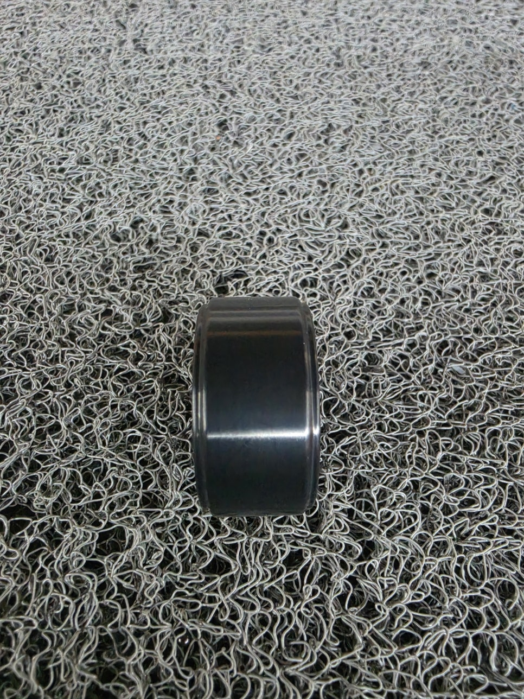
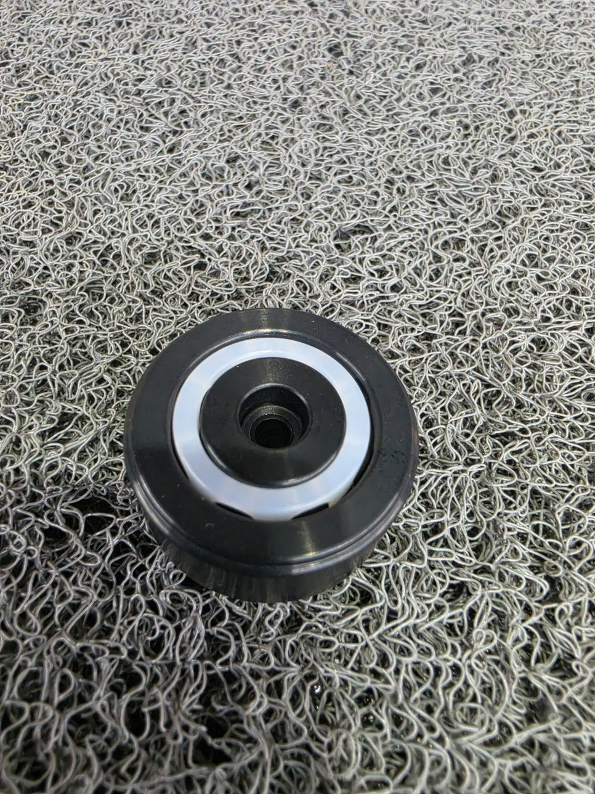
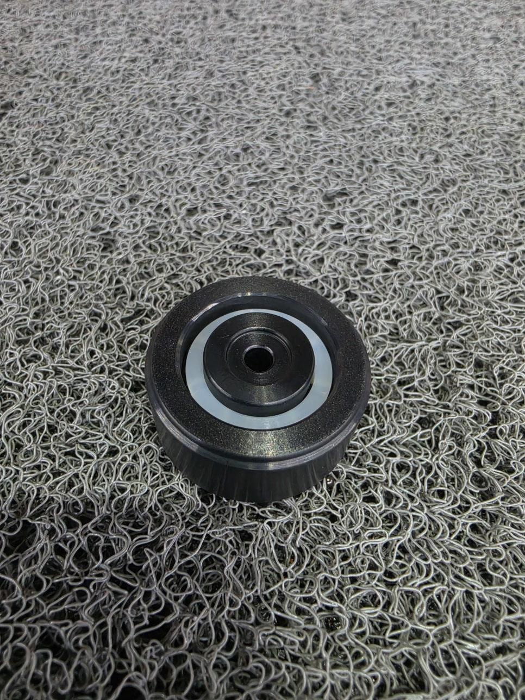
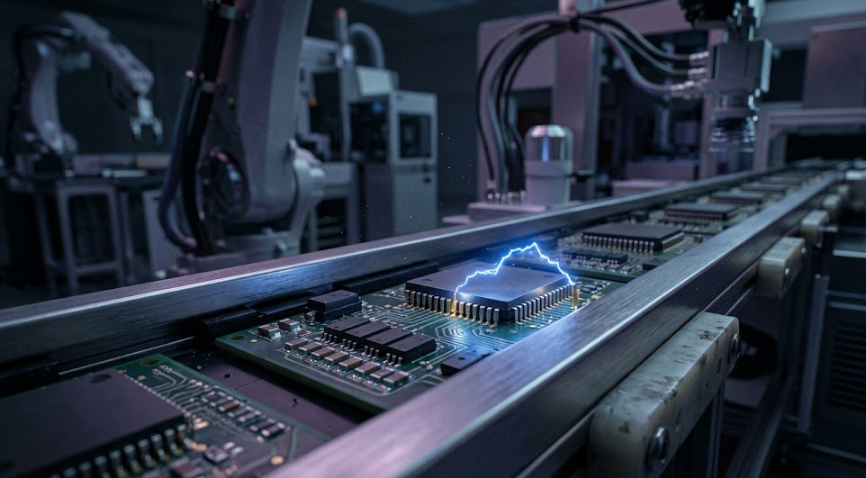

CNT UPE 대전방지 복열 롤러 핵심 수치
깐깐한 반도체·디스플레이 라인 설비 엔지니어들이 KTN의 롤러를 고집하는 이유는 감각이 아닌 세 가지 숫자로 설명됩니다.

이 순간에도 불량품은 쏟아지고 있습니다 — 원인부터 짚어야 합니다
반도체, 디스플레이, 정밀 필름, 의료기기 공정에서 불량률 1% 상승은 수천만 원, 많게는 수억 원의 손실로 직결됩니다. 현장에서는 "봄철이라 건조해서", "접지 상태가 나빠서"라며 애먼 곳에서 원인을 찾습니다.
진짜 범인: 매일 수만 번 마찰하는 컨베이어 라인의 '일반 플라스틱 롤러'
일반 플라스틱(PE, PP)의 표면저항은 10¹²Ω 이상입니다.
고속으로 회전할수록 마찰 전기가 쌓이고, 그게 정밀한 반도체 칩을 태우고
필름 표면에 미세 먼지를 자석처럼 끌어당깁니다.
심지어 고가의 센서를 오작동시키거나 작업자에게 감전을 일으키는 원인이 되기도 합니다.
소재(원인)를 바꾸지 않으면, 불량률은 결코 잡히지 않습니다.
수율 관리에 목숨을 거는 1차 밴더급 기업들이 이미 부품부터 조용히 교체하고 있는 이유입니다. KTN의 CNT UPE 대전방지 복열 롤러로요.
스펙 1. CNT 탄소나노튜브가 만든 완벽한 대전방지 — 표면저항 10⁶~10⁹Ω
시중의 검은 플라스틱이 다 대전방지 소재라는 착각이 있습니다. 색이 검다고 전기가 통하지는 않습니다.
KTN의 롤러는 내마모성의 끝판왕이라 불리는 UPE(초고분자량 폴리에틸렌) 소재에 CNT(탄소나노튜브)를 균일하게 혼합한 소재입니다. CNT가 소재 전체에 도전 네트워크를 형성해, 표면저항이 10⁶~10⁹Ω의 완벽한 대전방지 영역을 항시 유지합니다.
| 롤러 소재 | 표면 저항 | ESD 위험도 |
|---|---|---|
| 일반 플라스틱 (PE, PP) | 10¹²Ω 이상 | 정전기 대량 축적 |
| 카본블랙 혼합 플라스틱 | 10⁹~10¹¹Ω | 부분적 개선 |
| KTN CNT UPE 롤러 | 10⁶~10⁹Ω | 완벽한 대전방지 영역 |
롤러가 아무리 고속으로 돌아가도 마찰 전기가 스스로 부드럽게 빠져나갑니다. ESD 파손과 먼지 흡착을 원천 차단하는 것입니다.


스펙 2. 수명을 바꾸는 복열 구조 — 교체주기 50% 감소
소재만 좋다고 끝이 아닙니다. 구조가 버텨줘야 합니다.
일반적인 단일 베어링 롤러는 고속 회전 시 편심이 발생합니다. 한쪽만 깎이고, 진동이 커지고, 결국 수명이 단축됩니다. KTN의 롤러는 양쪽에 베어링이 들어가는 하중 분산 복열(double row) 설계를 채택했습니다.
스펙 3. 오차를 허용하지 않는 ±0.01mm CNC 정밀 가공
아무리 훌륭한 특수 소재라도 가공이 엉망이면 롤러는 제 구실을 못 합니다. 버(Burr)나 편심이 있으면 진동이 생기고, 진동은 다시 ESD를 악화시킵니다.
KTN의 20년 정밀 가공 노하우가 빚어낸 결과물은 수치로 나타납니다. ±0.01mm CNC 정밀 가공, 버(Burr) 제로, 완벽한 동심도. 정밀한 가공 덕분에 구동축에 무리를 주지 않아, 컨베이어 설비 전체의 수명까지 대폭 늘려줍니다.

구매·설비 담당자가 가장 많이 묻는 3가지
솔직히 말씀드리겠습니다.
CNT UPE 롤러가 모든 컨베이어 라인에 필요한 건 아닙니다.
정밀 전자부품을 다루지 않고, ESD 불량이 발생한 적이 없고, 기존 롤러 교체주기에 만족하신다면
지금 쓰시는 일반 롤러로 충분합니다.
KTN의 CNT UPE 대전방지 복열 롤러는 반도체·디스플레이·필름·의료기기처럼
ESD 불량 하나가 수천만 원짜리 손실로 이어지는 라인에 계신 분을 위한 제품입니다.
그런 라인이라면, 롤러 소재 하나 바꾸는 것이 불량률을 잡는 가장 확실한 첫걸음이 됩니다.